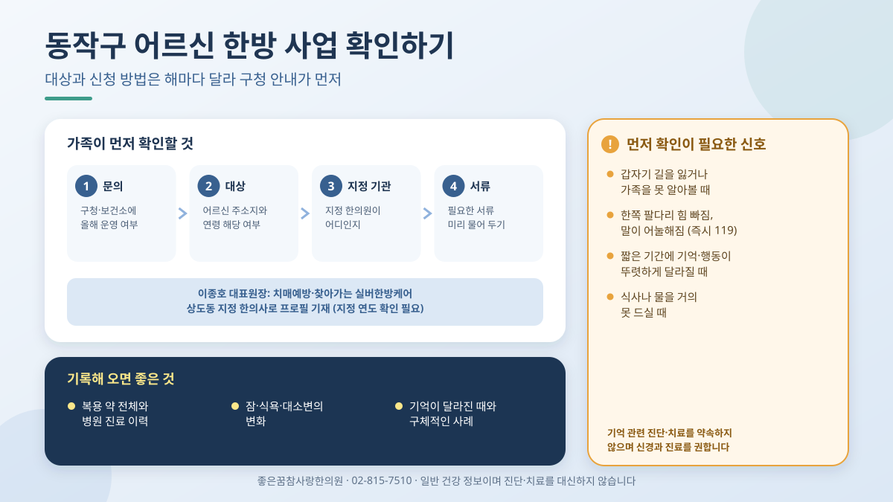

동작구 어르신 한방 관련 지역 사업은 대상과 신청 방법이 해마다 달라져 동작구청과 보건소 안내를 먼저 확인해야 하며, 이종호 대표원장은 치매예방과 찾아가는 실버한방케어 상도동 지정 한의사로 소개되어 있습니다.

동작구 어르신 한방 사업이 궁금하다면 올해 운영 여부와 대상, 신청 방법을 동작구청이나 가까운 보건소에 먼저 확인하는 것이 가장 정확합니다. 좋은꿈참사랑한의원의 이종호 대표원장은 이 가운데 일부 사업의 상도동 지정 한의사로 프로필에 소개되어 있습니다.
프로필에 기재된 내용
- 동작구 어르신 치매예방 사업 상도동 지정 한의사
- 동작구 찾아가는 실버한방케어 상도동 지정 한의사
이 정보는 한의원 프로필 카드 기준이며, 지정 연도와 사업 내용은 확인이 필요합니다.

왜 구청 안내가 먼저인가요
지역 사업은 대상 연령, 거주지, 소득 요건, 신청 기간, 비용 부담 여부가 해마다 달라집니다. 한의원에서 안내할 수 있는 범위와 구청에서 정하는 범위가 달라, 대상이 되는지는 구청과 보건소 안내가 기준입니다.
가족이 먼저 확인할 것
- 동작구청 또는 가까운 보건소에 올해 사업이 운영되는지, 신청 방법이 무엇인지 문의하기
- 어르신의 주소지와 연령이 대상에 해당하는지 확인하기
- 지정 한의원이 어디인지 확인하기
- 신청에 필요한 서류가 무엇인지 함께 물어 두기
- 방문 진료나 외출 동행이 필요한지 가족끼리 미리 이야기 나누기

어르신 진료는 이렇게 진행됩니다
보호자와 어르신의 이야기를 모두 듣고, 천천히 설명하며 진행합니다. 필요하다고 판단될 때 진맥·설진 같은 방법으로 몸 상태를 살피고, 잠과 식사, 활동 같은 생활 리듬을 함께 이야기합니다. 기억과 관련된 진단과 치료를 약속하지 않으며, 걱정이 크면 신경과 같은 진료와 검사를 함께 권합니다.
이렇게 기록해 오시면 상담이 쉬워집니다
- 복용 중인 약 전체와 병원 진료 이력(약 목록 정리)
- 잠, 식욕, 대소변의 변화
- 기억이 달라졌다고 느끼기 시작한 때와 구체적인 사례
- 보호자 동반 여부, 걷기와 이동의 불편(부모님 모시고 오시는 법)
- 최근 넘어진 적이 있는지, 밤에 화장실 가는 횟수
- 하루 중 가장 기운이 없어 보이는 시간대

이런 증상은 먼저 확인이 필요합니다
- 최근 갑자기 길을 잃거나 가족을 못 알아보는 경우
- 한쪽 팔다리 힘 빠짐, 말이 어눌해짐(즉시 119)
- 짧은 기간에 기억과 행동이 뚜렷하게 달라진 경우(신경과 등 진료)
- 식사를 거의 못 하시거나 물을 잘 안 드시는 경우
드시는 약은 처방한 의사와 상의 없이 줄이거나 끊지 마세요.
자주 묻는 질문
기억이 걱정될 때 한의원에서는 무엇을 하나요?
생활 리듬, 수면, 활동, 식사를 함께 이야기하며 살핍니다. 진단과 치료를 약속하지 않으며 걱정이 크면 신경과 같은 진료와 검사를 권합니다.
방문 진료가 가능한가요?
사업 운영 여부와 방식은 해마다 달라 한의원과 구청에 함께 확인해 주세요.
어르신 혼자 오셔도 되나요?
가능하지만 복용 약과 평소 모습을 잘 아는 보호자와 함께 오시면 상담이 훨씬 수월합니다.
지정 한의원이 바뀌기도 하나요?
지역 사업은 해마다 지정 기관이 달라질 수 있어, 신청 전에 구청과 보건소에서 확인하는 것이 정확합니다.
이 글은 일반적인 건강 정보이며 개인의 진단이나 치료를 대신하지 않습니다. 증상이 있거나 복용 중인 약이 있다면 진료를 통해 확인하세요. 치료 효과는 개인마다 다를 수 있습니다.
작성 기준: 일반적으로 알려져 있는 건강 정보를 참고해 정리했습니다(대표원장 감수). 증상 기록은 1~2주 동안 하루 1회, 비슷한 시간에 적어 오시면 지난 상태와 비교하기 쉽습니다.
좋은꿈참사랑한의원은 재진 때 지난번 이야기부터 이어서 여쭙니다. 진료시간과 예약은 오시는 길에서 확인하세요.